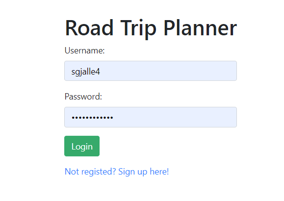
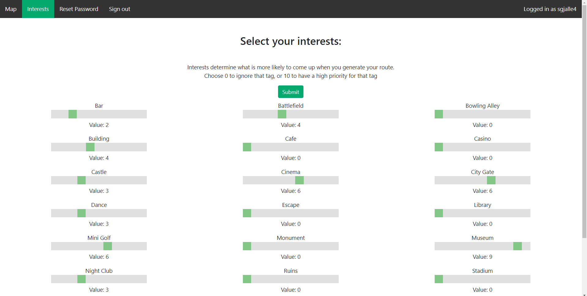
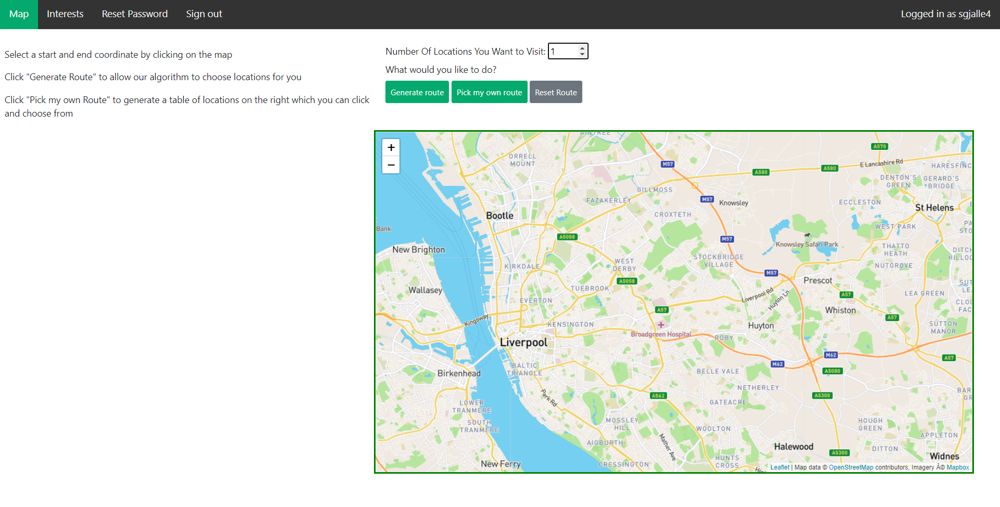
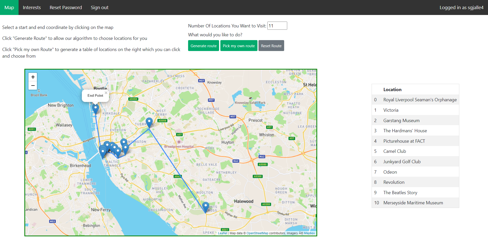
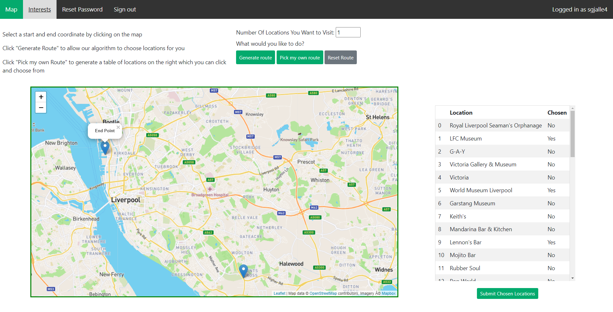

For my second year of university, I had to create a piece of software as part of a group of 6 people. We chose to make a web application that gives users recommendations of places to visit between 2 places like as a road trip based on their preferences. My task of the project was to take the start and end coordinates for the route, the number of locations the user wanted to visit and their interests and weighting of how much the user liked that interest. The other main algorithm that someone else was doing was to sort the lcoations outputted from my algorithm and sort them to make the most efficient route.
I won't go too in depth here with the actual code I wrote as that isn't particually interesting, so I'll just go through the general process my algorithm does to pick the locations, and then show screenshots of the website as a whole. This is a lot of just text, so skip to the bottom for the screenshots of the website.
The first thing I did was validate the inputs the algorithm was given. A pretty boring step, but a very important one to make sure my code was robust and to minimise any unhandled crashes or bad outputs. I also wrote unit tests using PHPUnit after the algorithm was finished to properly test the code and the validation to ensure I was accounting for as many edge cases as possible. To help with debugging the rest of the code, I also wrote a logging function which wrote to an external file, allowing me to track the code and variables as it ran, which helped a lot with bug catching and fixing.
One of the features of our web app is to give the user the option to pick out locations between the start and end points themselves if they wanted to bypass the recommendation part and just pick the places themselves. This choice is passed through to my algorithm as part of the inputs as a boolean variable, which at this point of the program, would query our database for all locations within the start and end coordinates, sorted by distance to start position, and return them back to the main PHP script if the user wanted to pick for themselves. Otherwise, the program will query the database for the same locations, but sorted into seperate arrays of which interest they were classifed as.
The algorithm next has to take the input interests and weightings, and split the number of locations the user wanted to visit proportionally so that the interests with a higher weighting would come up more than locations with a lower weighting. I had to do some extra validation steps here as well to account for roundings of the split leading to not enough locations being picked.
To generate the final locations list, the algorithm could then pick out at random the correct number of locations per interest to show the user. However, to make this part a little more interesting, I used the Google Maps API to get the rating of the location picked using the location's coordinates to further filter the locations selected to be ones of a rating above 3/5, so theres a higher chance of the location being a 'good' pick. If no rating is found, the location is still picked, just so any inaccuracies of either the API call or the way I used the API to find the location's rating would negatively impact that location. Then, the algorithm could pass the list of locations onto the sorting algorithm and then passed back to the main PHP script to be displayed to the user.
|  | This is the login screen, as an account is needed for the website to save the user's interest data and their saved routes, which we didn't get time to implement in the end, so just the interests are stored for each user. |
This is the interests page which dynamically creates these sliders based off of the interests in the database, so if we added more interests to the database, the website would update itself with a default value for the new interests. |
 |
|  | The map page allows the user to enter the number of locations they would like to visit between 1 and 20, and then generate a route or show the lcoations to pick from once they select the start and end points on the map. They can also reset their route which clears the map and allows them to make a new route again. |
Once a route has been generated, the user can see the list of locations that have been generated on the right, as well as click on the map markers to see where each location is. The database currently only contains locations in and around Liverpool, as we were not sure how well the universities database system could cope with large amounts of data. |
 |
|  | If the user wants to pick their own route, they can select the locations in the table on the right, and once the button has been pressed, the locations will appear on the map and the route will be drawn between them. |